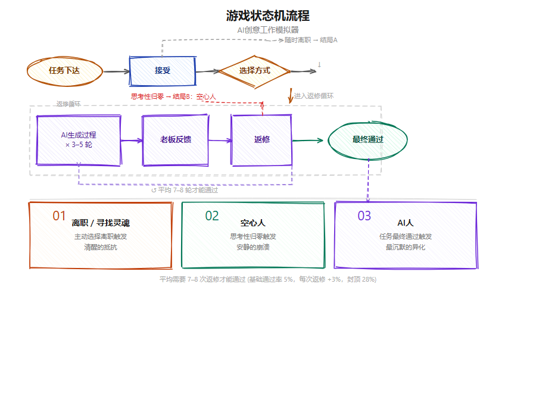
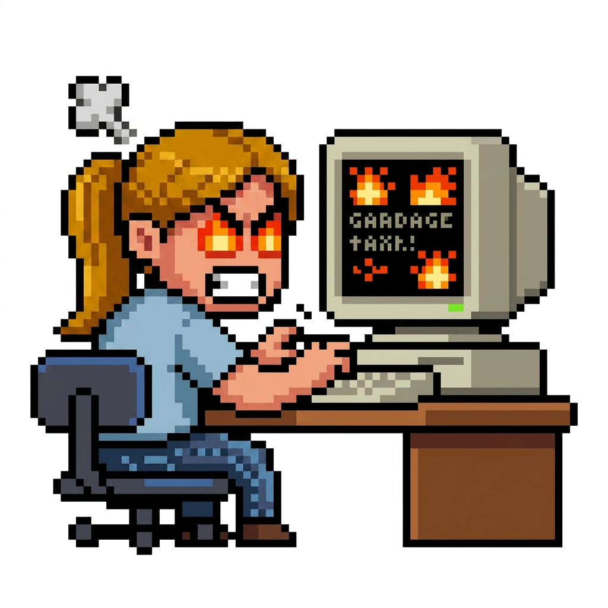
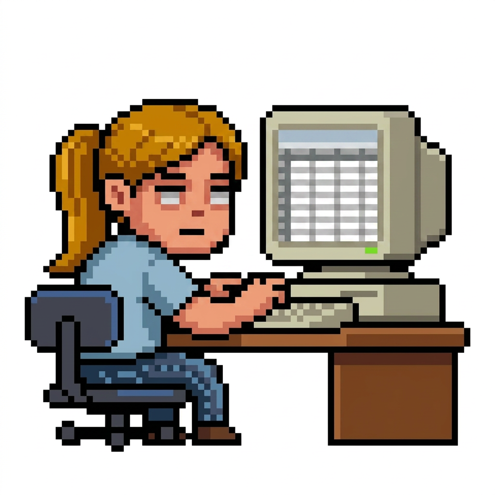

06 / 游戏机制与体验
游戏的核心是一个状态机：每一次选择都在改变两个数值，同时推进或中止流程。以下是游戏的完整流程结构，以及五个关键时刻的界面截图。
06a / 游戏状态机流程
06b / 关键时刻截图

以下五个界面还原了游戏中具有代表性的五个时刻，每张截图下方附有机制说明。
AI创意工作模拟器

心情：平静
- 思维还算清晰
老板发来新任务：夏日活动海报，节日氛围，热闹，色彩鲜明。截止日期：3天后。
时刻1 — 任务下达
游戏起点。两个选项形成了第一个分叉：接受，进入返修循环；或立刻离职，直接触发结局A。离职选项在全程都有，但此刻是代价最低的时候。
AI创意工作模拟器 — 第2次返修

心情：生气
- 有点依赖AI了
你写了一个很详细的prompt：国风、水墨、留白、高端、克制。AI给你生成了一个赛博朋克霓虹街头。
时刻2 — AI生成过程（第2次返修）
AI输出与预期的根本性背离。两个选项的代价不对等：坚持原思路（-4思考性）；顺着AI走（-2思考性，但方向跑偏）。游戏在此引导玩家感受"输入与输出的断开"。
AI创意工作模拟器 — 第4次被拒
心情：生气
- 自己想不太动了
- 进度有点落后
老板说："这个方向不对，我的意思是要有创意，但不要这么'AI感'。"
时刻3 — 老板拒绝（第4次）
思考性跌破50时，"离职"选项开始以更高频率出现。老板的反馈是故意模糊的——"有创意但不要AI感"本身就是无法量化的指令，玩家被迫在信息不足的情况下选择。
AI创意工作模拟器 — 第7次返修

心情：麻木
- 脑子有点生锈
- 进度压力很大
第7次返修。你已经忘了最开始的想法是什么了。
时刻4 — 第7次返修
第4次起，"重新思考提示词"按钮变成了"同一提示词重新生成"，标志着玩家进入纯重复状态。事件文本也从描述具体动作，转变为对玩家内心状态的旁白——"你已经忘了最开始的想法是什么了。"
AI创意工作模拟器 — 结局
心情：麻木
- 脑子有点生锈
- 进度压力很大
结局：AI人
老板说可以了。你看着最终版，已经看不出哪里是你的想法，哪里是AI给的。你已经在写下一个任务的prompt了。你不需要想从哪里开始。你打开工具，手指已经开始动了。这件事你做得很流畅。
时刻5 — 结局：AI人
游戏唯一的"成功"结局，也是设计上最具批判性的时刻。数值没有归零，任务通过了，但玩家的内心已经与工作彻底断开。"这件事你做得很流畅"——流畅，在这里是最沉默的悼词。
06b / 游戏体验
游戏为纯浏览器端运行，无需安装，单一HTML文件。以下是内嵌版本——或直接打开 index.html 体验完整版。
内嵌预览可能因浏览器安全策略限制部分功能，建议直接打开 index.html 体验完整版本。